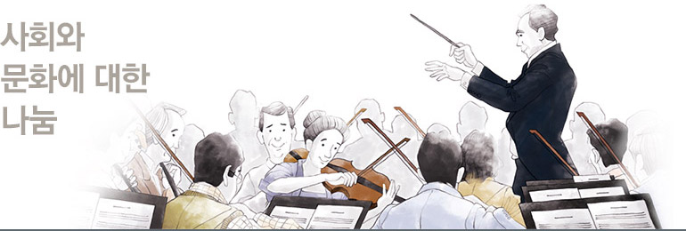
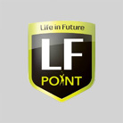
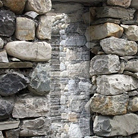
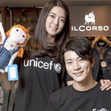
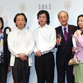

사회공헌
문화, 예술, 환경의 경계를 넘나드는 더 큰 나눔의 실천LF가 정의하는 나눔은
사람에 대한, 사회와 문화에 대한,
더 나아가서 자연에 대한 사랑을
폭넓게 아우르고 있습니다.
앞으로도 지속가능한 공헌 활동을
다양하게 전개해 나갈 것을
약속드립니다.


- ‘세상에 없던 단 하나의 골프 포인트’, LF POINT는 KLPGA 대회 공식기록에 객관적 기준을 적용,
점수로 환산하여 선수들을 평가하는 신개념 통합 골프 포인트 제도입니다. SBS 골프와 함께 2013년
KLPGA 시즌부터 매년 진행되고 있으며, 세계로 도약해 나아가는 대한민국 여자프로골프 선수들의
새로운 도전의 장이 되고 있습니다. 매년 시즌이 종료된 후, 상위 랭킹된 최후 8인의 선수들은 LF
POINT 왕중왕전에 참가하여 골프 여제를 향한 마지막 승부를 벌입니다.
http://www.lfpoint.com/
- 라푸마가 한국산악회와 공동으로 대한민국의 좋은 산행 문화 정착을 위한 장기 프로젝트를 진행, 그
첫 번째로 '산에서 함께 인사합시다' 캠페인을 진행하고 있습니다.
라푸마의 ‘나마스테! 산에서 함께 인사합시다’ 캠페인은 히말라야에서 트레킹하는사람들끼리 만나면, ‘
나마스테(NAMASTE)’라고 인사하는 것에서 착안해 기획되었으며 라푸마는 이 캠페인을 통해
‘안녕하세요’, ‘반갑습니다’, ‘건강하세요’ 등 산을 오르내리는 등산객끼리 인사말을 나누는 자연스러운
참여를 유도합니다. 특히, 어떠한 혜택을 제공한 인위적인 참여가 아닌, 등산객이라면 누구나
공감하고 자발적으로 참여할 수 있는 캠페인이기 때문에 새로운 산행 문화의 모범 사례로 자리매김할
것으로 기대됩니다.

- 라푸마는 네팔 히말라야 해발 3,000m 지역에 위치한 Jomsom(좀솜)에 MBC, KOICA와 함께 ‘세상에서 제일 아름다운 방송국’이란 슬로건으로 라디오 방송국을 건립하였습니다.
외부와 연결되는 도로는 힌두성지인 Muktinath(묵티나트)로 가는 길은 단 하나이고 정전이 거의 매일 일어날 정도로 열악한 환경이나 그 중에서도 히말라야 오지마을 좀솜 주민이 가장 필요로 하는 것은
다름 아닌 ‘정보’ 라푸마의 ‘세상에서 제일 아름다운 방송국’은 좀솜 지역 주민들에게 오아시스와 같은 정보의 Hub가 될 뿐 아니라 안나푸르나 트래킹을 이용하는 등산객들을 위한 산악 재난 구조 방송으로도 활용될 예정입니다.

- 러브 페스티벌
- LF와 롯데백화점의 공동 기획 하에, 2009년부터 롯데백화점 7개 점에서 LF의 12개 주요 브랜드가
참여하는 러브 페스티벌은 행사 기간 동안 판매 수익금의 1~2%를 유니세프가 진행하는 다양한 캠페인
‘말라리아 모기장 보내기(Stop Malaria!, 2009년)’, ‘스쿨 포 아프리카(Schools for Africa, 2010년)’,
‘아프리카의 뿔(Horn of Africa, 2011년)’ 등을 후원하고 있습니다.

- 반려동물 입양 캠페인
- 헤지스 액세서리는 사회적 이슈로 떠오른 유기견 입양과 보호에 적극 동참하였습니다.
2012년 10월 매거진 쎄씨와 애견카페 형식의 갤러리를 오픈하고, 배우 조윤희가 입양하거나
임시보호하고 있는 애견과 진행한 화보와 일러스트 작가 3인의 재능기부로 이루어진 펫 일러스트
6점을 기부 받아 전시했습니다.

- 아트 꿈나무 후원 이벤트
- 헤지스는 런던 아트 프로젝트의 일환 중 하나로, 예술적 재능을 지닌 아동들을 후원하는 2011년
신진작가 공모전을 진행하였습니다. 페이스북 오픈과 동시에 진행된 이 캠페인에서는 페이스북에서
‘좋아요’ 1개가 모일 때마다 1,000원을 적립하여 아트 꿈나무에게 재능 지원 물품을 전달합니다.
그 결과 5,581개의 소중한 사랑이 모여 서울 노원구 하늘품 지역아동센터를 포함한 5개 단체에 물감과
폼클레이 등 미술 용품과 플루트, 기타 등 악기들을 나누어 주었습니다.
- 마에스트로&프렌즈 프로젝트
- 마에스트로는 2005년 8월부터 3년 간 음악계의 세계적 거장인 마에스트로 정명훈의 팬클럽인
‘마에스트로&프렌즈’를 국내 기업 최초로 공식 후원하였습니다. 마에스트로&프렌즈 후원을 통해
지휘자 정명훈의 음악 활동을 도울 뿐만 아니라, 일반인과 청소년을 위한 교육 프로그램 개발과
보급, 소외 계층 돕기와 환경 보호 등 다양한 사회 활동을 돕는 데 보탬이 될 수 있었습니다.

- 런던 심포니 내한 공연
- 닥스 신사복은 2006년 개최된 런던 심포니 내한 공연 후원을 실시했습니다.
- 뮤지컬 미스 사이공
- 마에스트로는 2006년 뮤지컬 ‘미스 사이공’의 한국 초연을 후원하였습니다.